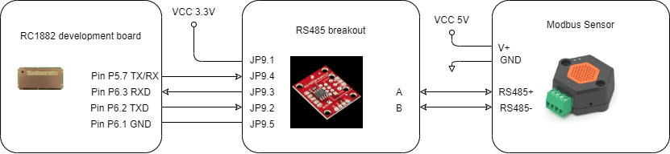

System Setup¶
Prerequisites¶
To utilize this example RIIM SDK 3.1.0 or later is required. Hardware is needed to run the example. RIIM DK is recommended <https://www.digikey.com/en/products/detail/radiocrafts-as/RC1882-RIIM-DK/10056516> or the RIIM HP kits also availale at digikey.
The example is based on running modbus over RS485. Hence a RS485 driver is recommended. Also some modbus devices are needed for testing.
For internal test of this example the following was used: - SparkFun Transceiver Breakout - RS485 <https://www.sparkfun.com/products/10124> - Tibbo RS485 modbus sensors <https://tibbo.com/store/rs485-modbus-sensors.html>
HW setup¶
To route the UART from RC1882xx module to the RS485 breakout board the UART zero-ohms resistors must be removed from the development board. (This limits the possibility to upgrade the firmware on the development board. In case only one test is intended, first upload the firmware and then remove the resistors. If multiple firmware development cycles are expected, the zero ohms resistor must be added and removed again. During development at Radiocrafts an external USB-to-UART dongle was used to plug directly on UART pins on development board instead)
Pin headers was mounted on the development board and jumper wires was used to connect UART-TXD, UART-RXD, TX/RX and GND to the RS485 breakout board. Pin headers was also mounted on the RS485 breakout board.
Jumper wires from the RS485 output was connected to the Tibbo RS485 sensors.
Both the RS485 breakout board and the Tibbo sensors require external power.
The physical connection is shown below:

The electrical connection is as follows:
{kind=link}
Firmware setup¶
Platform¶
With the SDK, download the TSCH plaforms to the board. For the Border router board choose border router standalone and for a development board chose MeshRouter TSCH platform.
Application¶
Copy the Example_MODBUS_MASTER folder to the ICI_Application catalog on the RIIM SDK. Then just compile and upload as a standard ICI example. See the SDK documentation if mode guidance is needed.
Firmware customization¶
The example uses TSCH and default band (EU 868 MHZ). Other bands or network setting can also be used. See the RIIM SDK documentation on how to tune network parameters.
The example is based on RS485, but can be tailored to also use RS232 by setting RS485_TX_RX_control to false. .. code-block:: bash
#define RS485_TX_RX_control true
In the example the baud rate on modbus for the sensors are default 38400, but this can be tailored for other modbus devices with different baud rate in in the file App_TransparentMODBUS_DB.c .. code-block:: bash
UARTBaudRate 38400
In the example the baud rate to the PC is set to 115200, but this can be adjusted in the file App_TransparentUART_BR.c
UARTBaudRate 115200